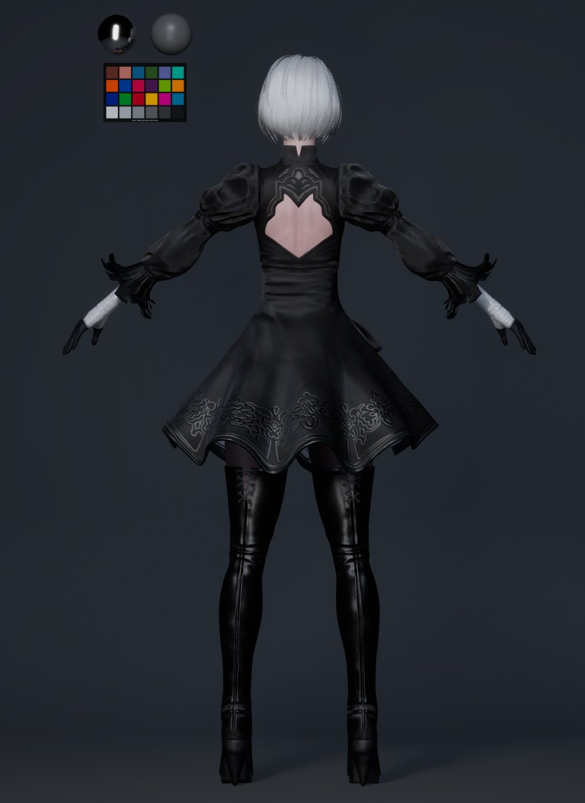

Character Artist · LookDev · Pipeline
Hirakawa
Shion
Shion
Character Artist — Tokyo, Japan
Experience
Aww Inc.
→
QVOU GAMES
→
SpaceData
Characters を見る
About


Software
Maya
ZBrush
Substance Painter
Unreal Engine 5
Photoshop
Wrap3D
Mari
XGen
Pipeline
USD / OpenUSD
MaterialX
OpenPBR
Python
Omniverse
Houdini Solaris
LookDevX
OCIO / ACES
01Hero個人制作 · ファンアート · 3D
個人制作 · ファンアート
NieR:
Automata
2B
Automata
2B
スカルプト・テクスチャ・リアルタイムパイプラインの技術習熟を目的とした個人制作。
Personal Study · Fan Art · Not for commercial use


02制作工程リファレンス収集 → 最終仕上げ
制作プロセス
01
リファレンス収集
公式アートワーク・スクリーンショットを収集。シルエットとプロポーションの目標値を設定。
02
ベースメッシュ
ZBrushで球体からブロックアウト。一次形状とマスの分布を確立。
03
ハイポリスカルプト
ZBrushで数百万ポリゴン。肌のポア・布の織り目・ハードサーフェスを高解像度でスカルプト。
04
リトポロジー
ZRemesher + Mayaで手動クリーンアップ。アニメーション変形に最適化したエッジフロー。
05
UV展開 · ベイク
Mayaでモジュラーなシームカット設計。AO・ノーマル・カーブチャー・厚みの各パスをベイク。
06
テクスチャ · LookDev
Substance PainterでPBRテクスチャリング。Photoshopで仕上げ調整。UE5でLookDev・検証。

Reference

Blockout

Mid Sculpt

High Poly

Retopology

Textured
使用ツール
ZBrushMayaSubstance 3D PainterPhotoshopUnreal Engine 5
03Final Renderシネマティックレンダー · ライティング

Beauty Main · Cinematic Lighting


03 — Final Render
Final
Render
Render
シネマティックライティングとサーフェスクオリティを探求した個人習作。
HDRI LitPBRUE5
04Faceクローズアップ · Eye Detail · スキン · ヘア

Face · Close-up

Eye Detail

Skin Pores

Subsurface

Hair Strands

Profile
8,200顔面ポリゴン数
4KSkin Map
SSSShader
32-bitNormal Depth
05Full Body360° · シルエット · サーフェス

FRONT

SIDE

BACK
05 — Full Body
全身
ビュー
| 総ポリゴン数 | 86,000 Tris |
| 制作期間 | 8週間 |
06Wireframeトポロジー · エッジフロー
Full Wireframe

Face Topology
06 — Wireframe
Topology
変形時の流れ、シルエットの維持、制作上の読みやすさを意識したトポロジー。
Topology designed for deformation awareness, clean silhouette preservation, and production readability.
07TexturePBR マップ · チャンネル構成 · カラーマネジメント
Albedo

Normal

Roughness

Metallic
07 — Texture
PBR
Material Suite
Material Suite
解像度4096 × 4096
フォーマットPNG
カラースペースRAW / sRGB
カラーマネジメントACES CG
Channel Maps

AO

SSS

Emission

Opacity

Height

UV Map
08LookDevライティング検証 · マテリアルレスポンス

Studio Neutral3-point · Soft box

BacklightRim · Silhouette

Outdoor HDRINatural · Overcast

Game EngineUE5 · Lumen
—Work商業制作実績

2019 — 2025 · 商業CG制作
バーチャルヒューマン制作
商業バーチャルヒューマンプロジェクトへのキャラクターアセット制作。Unreal Engineを用いたリアルタイムプレゼンテーション。大規模商業案件での品質基準・ワークフロー規律・納品要件を習得。
Virtual HumanUnreal EngineLookDevProduction

2025 · ゲームアセット制作
セルルック制作
Unityベース環境でのセルルックキャラクターアセット量産。制作効率・データ管理・最適化・一貫性・納品要件を重視した実務対応。リアル系からの対応範囲拡張。
Cell LookUnityGame AssetProduction

2026 — · デジタルツイン制作
デジタルツイン制作
SpaceDataでのデジタルツインアセット制作とOpenUSDパイプライン検証。DCC間連携、MaterialX、Pythonツールによる制作フロー構築。
Digital TwinOpenUSDMaterialXPython
—Design Study造形探求 · フォームスタディ

造形習作 · Form Study
Eyewear Design Study
ベルニーニのプロセルピナから影響を受けた造形習作。接触・面の変化・力の流れの観察をアイウェアのフォームに応用する試み。
Form StudySculptingShape Exploration
—ResearchLookDev · Color Management · USD · Pipeline
Research Overview
LookDev · USD · Pipeline
Character LookDev / Color Management / USD / MaterialX / OpenPBR / Python Tools — verification archive.
LookDev / Color Management
- Character LookDev
- Skin Rendering / SSS
- Color Management
- ACEScg / OCIO
- Cross-polarized photography
- Unreal Engine presentation
CGWORLD Masterclass Online Vol.15
カラーマネージメントを意識したキャラクタールックデヴのワークフロー
カラーマネージメントを意識したキャラクタールックデヴのワークフロー
USD / MaterialX / Pipeline
- OpenUSD · Variant Sets
- Maya → Houdini → Omniverse
- MaterialX / OpenPBR
- LookDevX
- 参照パス管理
- 共有環境運用
Python Tools / Automation
- Python 自動化
- 命名規則設計
- アセット管理ルール
- パイプライン文書化
- Variant管理ルール
- ワークフロー検証
Verification Summary
DCC間でのVariant Set運用、MaterialX / OpenPBR連携、ACEScgカラーパイプライン、Maya → Houdini → Omniverse間のアセット受け渡しを検証。命名規則・参照パス管理・Pythonツールによる制作フローの再現性を確認。
—Aboutプロフィール · スキル · 連絡先
About
平川詩恩
キャラクターアーティスト。Aww Inc.でのバーチャルヒューマン制作、QVOU GAMESでのセルルックアセット制作を経て、現在はSpaceDataでデジタルツイン制作とOpenUSDパイプライン検証に携わる。
Character ModelingUE5 LookDevPBR TexturingUSD Pipeline
モデリング · スカルプト
テクスチャ · マテリアル
リアルタイム · エンジン
パイプライン · ツール
Experience
Aww Inc.
Character Artist / Virtual Human Production
2019 — 2025
QVOU GAMES
Game Asset Production / Cell Look Character
2025
SpaceData
Digital Twin / OpenUSD Pipeline
2026 —